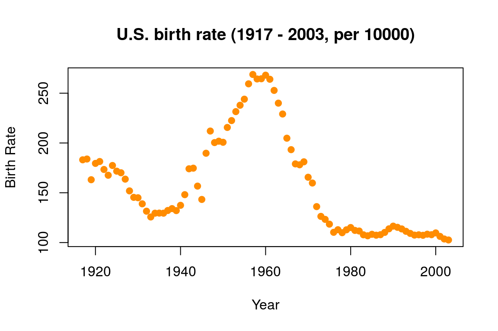
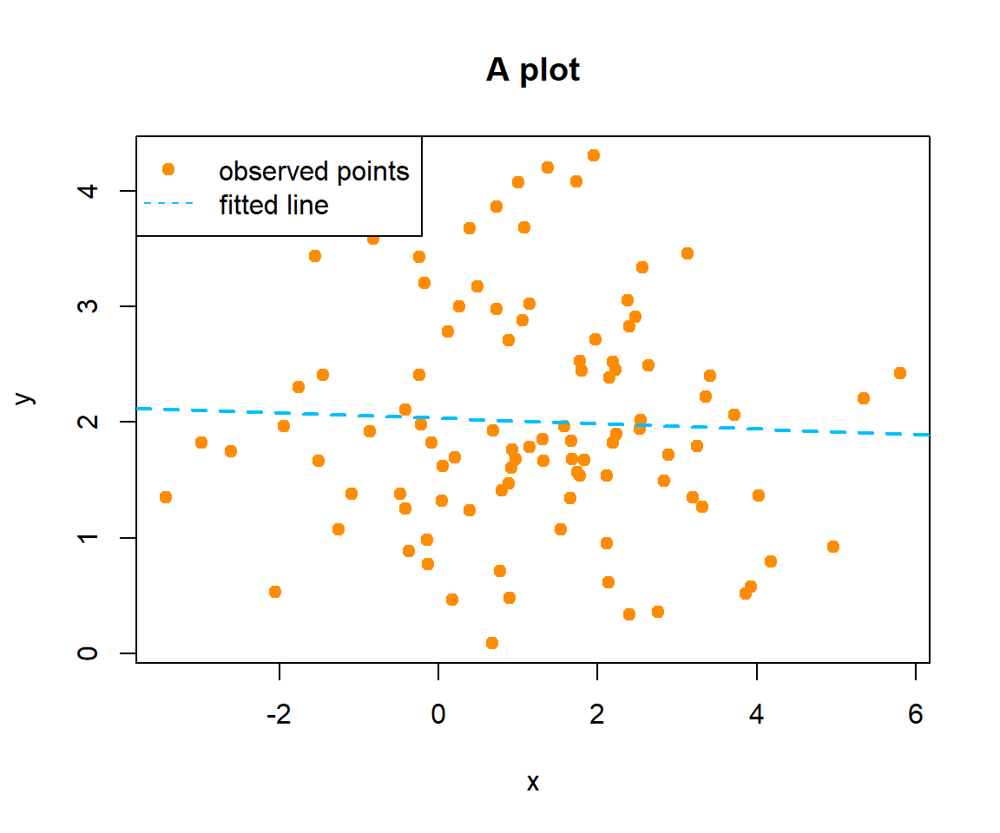

Chapter 2 Basics of Probability and Statistics
2.1 Random Number Generation
Random number generation is important for statistical simulation. R provides random number generators for many commonly used distributions, such as binomial (rbinom), normal (rnorm), t (rt) etc. The syntax is usually a letter “r” followed by the name of the distribution.
# generate 10 independent Bernoulli random variables as a vector
rbinom(n=10, size = 1, prob = 0.5)
## [1] 0 1 0 1 0 0 0 0 0 1
# 4 independent random standard normal variables
rnorm(n=4)
## [1] -0.60629004 0.01484334 -0.70251385 1.57949807Setting the seed before generating random numbers will allow us to replicate the results when necessary.
# after setting the seed, the two runs will generate exactly the same "random" numbers
set.seed(1)
rnorm(n=4, mean = 1, sd = 2)
## [1] -0.2529076 1.3672866 -0.6712572 4.1905616
set.seed(1)
rnorm(n=4, mean = 1, sd = 2)
## [1] -0.2529076 1.3672866 -0.6712572 4.1905616Some more complicated distributions require additional package. For example, the MASS package can be used to generate multivariate normal distribution. One needs to specify a covariance matrix.
2.2 Summary Statistics and Data Visualization
Statistical functions that provides a summary of the data
x = rnorm(n=100, mean = 1, sd = 2)
y = rnorm(n=100, mean = 2, sd = 1)
sum(x)
## [1] 123.9597
mean(x)
## [1] 1.239597
var(x)
## [1] 3.12596
median(x)
## [1] 1.116457
quantile(x, c(0.25, 0.5, 0.75))
## 25% 50% 75%
## 0.0115149 1.1164572 2.3955519
cor(x, y)
## [1] 0.05988467For discrete data, we can use the table function
library(ElemStatLearn)
data(SAheart)
table(SAheart$famhist)
##
## Absent Present
## 270 192
table(SAheart[, c("famhist","chd")])
## chd
## famhist 0 1
## Absent 206 64
## Present 96 96Fisher’s exact test and the Chi-square test are tests of independence between two nominal variables.
# We can test the association between family history (famhist) and
# the indicator of coronary heart disease (chd)
# using Fisher's Exact
fisher.test(table(SAheart[, c("famhist","chd")]))
##
## Fisher's Exact Test for Count Data
##
## data: table(SAheart[, c("famhist", "chd")])
## p-value = 6.658e-09
## alternative hypothesis: true odds ratio is not equal to 1
## 95 percent confidence interval:
## 2.119573 4.891341
## sample estimates:
## odds ratio
## 3.209996
# or the Chi-square test
chisq.test(table(SAheart[, c("famhist","chd")]))
##
## Pearson's Chi-squared test with Yates' continuity correction
##
## data: table(SAheart[, c("famhist", "chd")])
## X-squared = 33.123, df = 1, p-value = 8.653e-09For continuous variables, data visualization can be very helpful. There are many different ways to customize a plot, such as changing the color, shape, label, etc. For more advanced features, the R package ggplot2 is a very popular choice.
# We use the birthrate data introduced earlier for this example
birthrate = read.csv("data/birthrate.csv")
plot(birthrate, pch = 19, col = "darkorange", ylab = "Birth Rate",
main = "U.S. birth rate (1917 - 2003, per 10000)")
Correlations and correlation plots can be used to summarize more varaibles. However, becareful that factors may not be supported by this feature and could cause errors.
# load the package with loading message suppressed
suppressMessages(library(PerformanceAnalytics))
chart.Correlation(SAheart[, c(1:3)], histogram=TRUE, pch="+")3-dimentional plots are also alternative ways to visualize data. We demonstrate an example using the plot3D package and the scatter3D function. The package rgl can allow for interactive plot with rotating and zooming.
library(plot3D)
scatter3D(SAheart$ldl, SAheart$age, log(1+SAheart$tobacco),
xlab = "LDL", ylab = "Age", zlab = "Tobacco",
pch = 18, bty = "u", col.var = SAheart$chd,
col = ifelse(SAheart$chd == 1, "darkorange", "deepskyblue"),
colkey = FALSE)